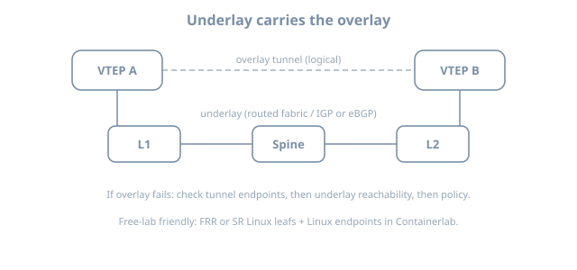
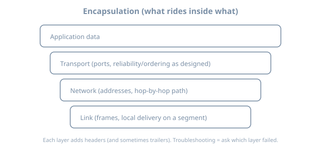

Why Encapsulate
Why Encapsulate
Encapsulation is not a fashion—it is how networks reuse an underlay while giving tenants or sites a different topology, address space, or policy domain. This chapter builds durable models before GRE/IPsec/VXLAN/EVPN syntax (Containerlab + FRR + Linux, mid-2026 free path).
Learning goals
By the end of this chapter you can:
- Separate underlay from overlay responsibilities
- List reasons to tunnel or encapsulate (and reasons not to)
- Trace a packet through outer/inner headers
- Predict MTU, ECMP entropy, and troubleshooting failure modes
- Map encapsulation choices to common design problems
The core picture
overlay topology (what apps believe)
┌──────────┐ ┌──────────┐
│ site A │ ······· │ site B │
└────┬─────┘ └────┬─────┘
│ encapsulated path │
┌────▼─────────────────────▼────┐
│ underlay IP fabric/WAN │
└───────────────────────────────┘| Plane | Job |
|---|---|
| Underlay | Deliver outer packets between tunnel endpoints (IP reachability, IGP/BGP, ECMP) |
| Overlay | Present virtual links, L2 segments, or VRFs to tenants/sites |
| Control (overlay) | Who is where (EVPN-class, controller, static maps) |
| Data (overlay) | Encapsulation format (VXLAN, GRE, Geneve, IPsec…) |

Why people encapsulate
| Driver | What encapsulation buys |
|---|---|
| Overlap addresses | Two tenants both use 10.0.0.0/8 |
| L2 adjacency over L3 | VM mobility, some clusters, legacy apps |
| Policy domains | Separate routing tables / VRFs |
| Traffic engineering | Steer logical topology ≠ physical |
| Multi-site stretch | Same segment in two DCs (careful!) |
| Security boundary | IPsec provides crypto + integrity |
| Abstraction | Apps ignore underlay renumbering |
Why not to encapsulate
| Temptation | Cost |
|---|---|
| Tunnel everything by default | MTU tax, state, debug opacity |
| Stretch L2 globally | Failure domains explode |
| Overlay without underlay skill | “EVPN down” actually IGP down |
| Double NAT + tunnel + hairpin | Undebuggable piles |
Rule: prefer plain IP routing until a requirement forces an overlay.
Encapsulation as Russian dolls

Example mental stack (VXLAN-ish):
[ Eth ][ IP underlay ][ UDP ][ VXLAN ][ Eth inner ][ IP inner ][ TCP ][ payload ]| Header | Owned by |
|---|---|
| Outer IP | Underlay endpoints (VTEPs / tunnel routers) |
| Outer L4 | Often UDP for ECMP entropy (VXLAN) |
| Overlay header | VNI / keys / flags |
| Inner frame | Tenant |
GRE classic:
[ Eth ][ IP ][ GRE ][ IP inner ][ ...]IPsec tunnel mode adds crypto headers and often transports inner IP.
Identifiers you must name
| Identifier | Role |
|---|---|
| Tunnel endpoint IP | Underlay address of VTEP/router |
| VNI / VPN id / GRE key | Separates segments |
| VRF | Routing table isolation |
| Route target / RD (EVPN/MPLS-ish) | Control-plane membership |
| Mapping | End-host IP/MAC → endpoint |
Without a clear mapping system (static, flood-and-learn, EVPN), overlays become amateur radio.
Failure domains
Underlay down → all overlays using it down
One VTEP down → locals on that leaf isolated from fabric overlay
VNI mis-map → blackhole or cross-tenant leak (severe)
MTU blackhole → big packets die, small pings liveAlways ask: is this underlay, overlay data, or overlay control?
MTU tax
Every header steals bytes. If underlay MTU is 1500 and you add ~50–100 bytes, inner needs lower MTU or underlay needs jumbo.
| Symptom | Likely |
|---|---|
| Ping works, TCP hangs | PMTUD broken + encapsulation |
| Only large transfers fail | MTU |
| DF set drops | Need clamp or larger underlay |
Lab habit: set explicit MTU on overlay interfaces and test large pings.
ping -M do -s 1472 10.0.0.1 # classic Ethernet payload probe
# inside overlay, lower size until success; compute header taxECMP and entropy
Underlays load-balance on outer five-tuple. If outer UDP/TCP ports are fixed, many inner flows hash to one path → polarization.
| Design | Entropy |
|---|---|
| VXLAN UDP source port from inner flow hash | Good |
| GRE without entropy helpers | Often poor |
| IPsec without cleverness | Can polarize |
When debugging “uneven spines,” check outer headers, not only inner apps.
Control plane vs data plane (again)
| Data plane only | With control plane | |
|---|---|---|
| Static GRE | Manual who-to-whom | — |
| Flood-and-learn VXLAN | Dynamic MAC via flood | Limited scale |
| EVPN-class | Advertises reachability | Mapping distributed |
This book’s later chapters: site tunnels (mostly static/service), VXLAN data plane, EVPN intro where free images allow.
Mini lab — see encapsulation with tcpdump
name: encap-why
topology:
nodes:
a:
kind: linux
image: alpine:3.20
exec:
- apk add --no-cache iproute2 iputils tcpdump
b:
kind: linux
image: alpine:3.20
exec:
- apk add --no-cache iproute2 iputils tcpdump
under:
kind: linux
image: alpine:3.20
exec:
- apk add --no-cache iproute2 iputils tcpdump
- sysctl -w net.ipv4.ip_forward=1
links:
- endpoints: ["a:eth1", "under:eth1"]
- endpoints: ["b:eth1", "under:eth2"]GRE between a and b across under
# addresses: a 10.0.0.1/24, under eth1 10.0.0.254; b 10.0.1.1/24, under eth2 10.0.1.254
# underlay route a↔b via under
docker exec clab-encap-why-a sh -c '
ip tunnel add gre1 mode gre remote 10.0.1.1 local 10.0.0.1 ttl 64
ip link set gre1 up
ip addr add 172.16.0.1/30 dev gre1
'
docker exec clab-encap-why-b sh -c '
ip tunnel add gre1 mode gre remote 10.0.0.1 local 10.0.1.1 ttl 64
ip link set gre1 up
ip addr add 172.16.0.2/30 dev gre1
'Predict → observe → fix
docker exec clab-encap-why-a ping -c 2 172.16.0.2
docker exec clab-encap-why-under tcpdump -ni eth1 -c 5 proto gre
# or: tcpdump -ni eth1 proto 47Predict: underlay capture shows outer IP a→b with GRE; inner ICMP not as plain on underlay without decap.
Observe: header stack.
Fix: if no gre, check tunnel remote/local and underlay ping 10.0.1.1 from a.
Design questions checklist
Before choosing an overlay:
- What problem is pure IP routing failing to solve?
- L2 stretch or L3 VPN?
- Who allocates VNIs / VRFs?
- What is the underlay routing design?
- MTU strategy?
- How do we debug (mirror, drop counters, inner/outer captures)?
- Failure domain acceptable?
Mapping to the journey map
Models (planes, encap)
→ underlay skill (L2/L3/IGP/BGP)
→ edge services
→ overlays (this part)
→ fabrics (scale the underlay + overlay)Skipping underlay competence makes overlay chapters mystical.
Common mistakes
| Mistake | Symptom |
|---|---|
| Troubleshooting only inner | Miss underlay loss |
| Ignoring MTU | Mystery TCP issues |
| One giant L2 VNI | Broadcast storms / failure blast |
| No inventory of VNIs | Collisions and leaks |
| Encrypt + fragment chaos | Performance cliff |
Summary
- Encapsulation reuses underlays to build different logical networks
- Always name underlay, overlay data, overlay control, and identifiers
- MTU and ECMP entropy are not footnotes
- Prefer routing until requirements force tunnels
- A tiny GRE lab + tcpdump makes the model real
Next: site tunnels—practical GRE/IPsec-style site-to-site patterns on free Linux/FRR labs.